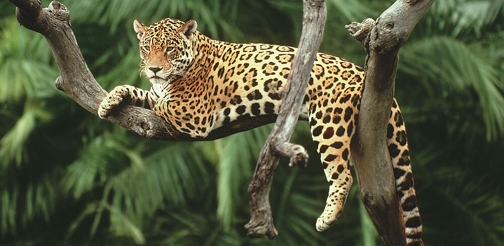

Nuestro planeta está viviendo la sexta extinción masiva. Actualmente, estamos experimentando las peores tasas de extinción desde la desaparición de los dinosaurios hace 65 millones de años. A pesar de que la extinción biológica es un fenómeno natural a escala temporal geológica, expertos estiman que ahora estamos perdiendo especies entre 1,000 y 10,000 veces más rápido comparado con la tasa natural, con literalmente decenas de especies extinguiéndose todos los días. Si las tasas actuales de extinción continúan, un futuro aterrador queda por delante, con el 18 al 35 por ciento de todas las especies posiblemente extintas a mediados de siglo. México no es la excepción. Bajo la regulación mexicana oficialmente hay 49 especies consideradas “extintas”, 475 especies “en peligro”, 896 “amenazadas” y 1,185 “bajo protección especial”.
Animales de México en peligro de extinción:
Vaquita marina (Phocoena sinus)Mariposa monarca (Danaus plexippus)
 Jaguar (Panthera onca)